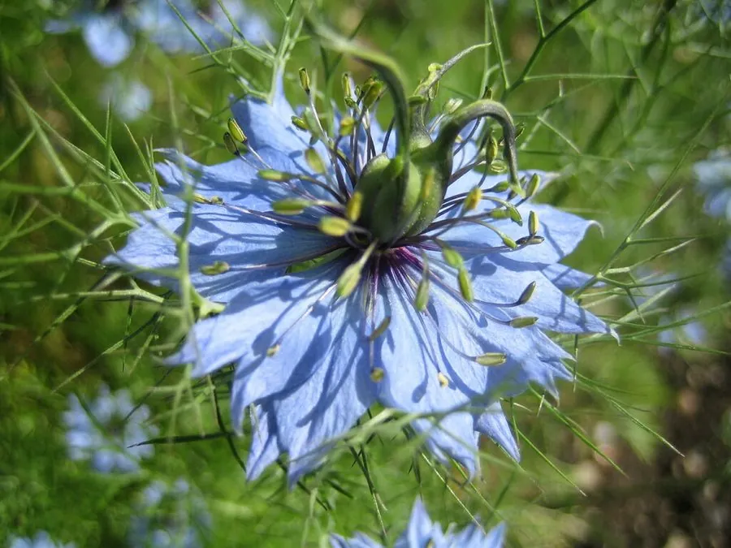

花卉与草本 · 植物界
黑种草 Nigella damascena

毛茛科一年生草本，细裂的苞片如羽纱环绕花朵，蓝紫色花在其中若隐若现，是花境与干花制作的特色植物，原产地中海沿岸。
- 分类
- 门被子植物门纲木兰纲目毛茛目科毛茛科属黑种草属
- 栖息环境
- 地中海沿岸的干燥坡地与田边，喜凉爽、阳光充足
- 地理分布
- 原产地中海沿岸，现世界各地栽培，中国各地庭园常见
- 保护级别
- 暂无评估
物种志
黑种草为毛茛科黑种草属一年生草本，株高 30–60 厘米，茎直立，多分枝。叶片二至三回羽状深裂，裂片细丝状。花单生茎顶，花被片 5 枚，蓝紫、粉或白色，外围有细裂的苞片环绕，花期 5–7 月；果实为膨大的球形蒴果，成熟后开裂。
黑种草原产地中海沿岸，喜阳光充足、凉爽干燥和排水良好的环境，不耐酷热和积水，常自播繁衍。它细裂的苞片像一层羽纱，把花朵半掩其中，因此英文名意为“雾中情人”；花谢后膨大的球形蒴果也颇具观赏性，常用于干花制作。栽培以播种为主，成片种植可营造轻盈梦幻的花境效果；干燥后的花萼和蒴果是花艺中常见的装饰材料。
形态与习性
- 株高30–60 厘米，茎多分枝
- 花期5–7 月
- 果期花后结球形蒴果
- 光照喜充足阳光
- 水分耐旱，忌积水
- 土壤疏松、排水良好的壤土
- 主要用途花境、切花、干花制作
趣味知识
- 黑种草细裂的苞片像羽纱环绕花朵，英文名意为“雾中情人”。
- 花谢后膨大的球形蒴果也很有观赏性，可制作干花。
- 它原产地中海沿岸，耐旱不耐酷热，常自播繁衍。
- 蓝紫色花朵在细裂苞片中若隐若现，是花境的特色材料。